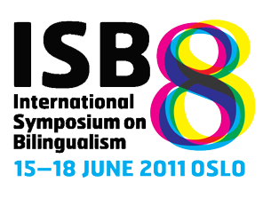

Presentations of 8th International Symposium on Bilingualism
Presentations by faculty and students in Penn State's Center for Language Science scheduled at the 8th International Symposium on Bilingualism, Oslo, Norway, June 2011:
Bogulski, C. A., & Kroll, J. F. (2011). Does the bilingual advantage in foreign language vocabulary acquisition extend to implicit measures of learning? A comparison of behavioral and ERP evidence.
Botezatu, M. R., Misra, M., & Kroll, J. F. (2011). When L1 is shallow and L2 is deep: The role of language dominance in modulating the transfer of spelling-to-sound correspondences in bilingual reading.
Bultena, S., Dijkstra, T., & Van Hell, J. G. (2011). Within and between language co-activation in word and sentence context.
Dietrich, A., & Dussias, P. E. (2011). The role of L1 verbal information in L2 syntactic processing.
Dussias. P.E., Bajo, T., Gerfen, C., Valdés Kroff, J., & Morales, L. (2011). When gender and looks don't go hand in hand.
Feldman, L., Van Hell, J. G., Ernestus, M., Fowler, C., & Shu, H. (2011). Does morphological processing in L2 depend on the structure of L1?
Fokke, J., Meuter, R., & Van Hell, J. G. (2011). Individual differences and language switching in bilinguals and trilinguals.
Gerfen, C., Kroll, J. F., Tam, J., Poepsel, T., Guo, T., & Misra, M. (2011). Blocked naming yields evidence for global inhibition in both the planning and production of speech. Talk to be presented as part of a symposium, Language control and cognitive functions in bilinguals (D. W. Green & J. Abutalebi, Organizers).
Gullifer, J., Kroll, J. F., & Dussias, P.E. (2011). Can cross-language lexical activity be modulated by language-specific syntax?
Guzzardo, R., Dussias, P. E.., Gerfen C., Theberge, M., Valdés Kroff, J. R., Gullifer, J. (2011). Linking comprehension costs to production patterns during the processing of mixed language.
Hoshino, N., & Kroll, J. F. (2011). When same and different script bilinguals speak in each of their languages: Does different-script bilingualism facilitate selection?
Kroll, J. F., Minnick, M., Tam, J., Rossi, E., Misra, M., & Gerfen, C. (2011). Naming all of the vegetables in a row: Does cross-language competition for selection increase under conditions of semantic blocking? Talk to be presented as part of a symposium, Dynamic Lexical Interaction of L1 and L2 (B. Malt & P. Li, Organizers).
Li, P., Yang, J., Shu, H., & Tan, L. (2011). Language-specific experience and AoA modulate neural activities in L1 and L2. Talk to be presented as part of a symposium, Universal and language-specific patterns in bilingual processing: The importance of a comparative approach (J. van Hell, Organizer).
McClain, R., Kroll, J. F., Guo, T., & Chen, B. (2011). What distracting information tells us about bilingual speech planning: Evidence for asymmetries in translation.
Paolieri, D., Morales, L., Bajo, T., Valdés Kroff, J. R., Gerfen, C., & Dussias, P. E. (2011). The gender congruency effect during bilingual spoken-word recognition.
Peters, J., Kroll, J. F., & Dussias, P. E. (2011). Poster: Switching language dominance: What immersion tells us about the way bilinguals process words and sentences.
Piñar, P., Dussias, P. E., Carlson, M., Morford, J. (2011). Contextualizing the reading patterns of deaf individuals within studies on bilingual sentence processing.
Rathmann, C., Kubus, O., Morford, J. P., Occhino-Kehoe, C., Wilkinson, E., Piñar, P. & Kroll, J. (2011). A cross-linguistic study of non-selective lexical access in deaf bilinguals: ASL-English and DGS-German bilinguals compared. Paper to be presented as part of a symposium, Bilingualism across and within modalities (K. Emmorey, Organizer).
Rossi, E., Gullifer, J., Dussias, P. E., & Kroll, J. F. (2011). On the consequence of late bilingualism for morpho-syntactic processing in the L2: Evidence from behavioral and ERP data. Talk to be presented as part of a symposium, Universal and language-specific patterns in bilingual processing: The importance of a comparative approach (J. van Hell, Organizer).
Rossi, E., Kroll, J. F., & Dussias, P.E. (2011). Poster: Does typological similarity matter? The processing of grammatical gender and number in late English-Spanish bilinguals: Evidence from ERPs and eye-tracking.
Valdés Kroff, J. R., Dussias, P. E., Gerfen, C., Guzzardo, R. E., Coffman, D., Gullifer, J. (2011). Costly integration of code-switched utterances: When code-switching becomes a language switching task.
Van den Boer, M., Ting, C., Minnicks, J. K., Van Hell, J. G., Dussias, P. E., & Kroll, J. F. (2011). Words are not pictures: How semantic constraint affects word and picture naming in bilinguals and multilinguals.
Van Hell, J. G., Hermans, D., Hermes, E., Van der Loop, J., & Ormel, E. (2011). Co-activation of phonology in speech-sign and speech-speech bilinguals.
Zhao, X., & Li, P. (2011). Simulating cross-language priming: A computational study of the bilingual lexicon based on DevLex-II. Talk to be presented as part of a symposium, Computational Modeling of Bilingualism: Integrating Acquisition and Processing (P. Li, & V. Marian, Organizers).
Zinszer, B., & Li, P. (2011). Naming in two languages: Bilingual lexical categorization. Talk to be presented as part of a symposium, Dynamic Lexical Interaction of L1 and L2 (B. Malt & P. Li, Organizers).

Center for Language Science
Pennsylvania State University
2M Thomas Building
University Park, PA 16802
For more details, please click here